Dimanche dernier
Ce doublé,
c'est le tien.
Avenir d'Adakpamé 3 – 1 Olympique de Tokoin
Au classement
Tes buts
sont là…
Au classement
Mais personne
ne sait
que c'est toi.
Étape 1
Crée ton
compte
Gratuit. Une minute.
Étape 2
Rejoins ton
équipe
Ton manager t'invite, tu acceptes.
Étape 3
Tes buts
te suivent
Ton manager confirme que c'est toi :
tes matchs passés arrivent sur ta fiche.
Ton équipe
Elle compte
sur toi
Convocations, entraînements :
tu réponds en un geste.
Ta place
Grimpe au
classement
Ta photo, ta fiche, tes buts.
Et peut-être…
Le joueur
de la semaine
Sur le Direct, toute la semaine.
✓
Ekoué a rejoint l'Avenir d'Adakpamé
✓
Convocation acceptée pour dimanche
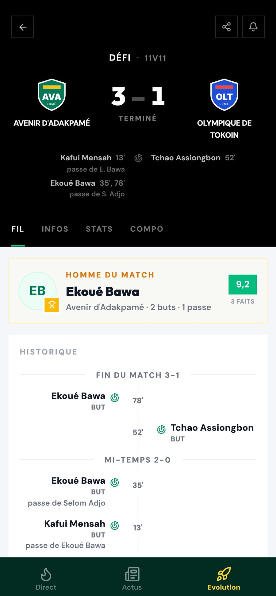
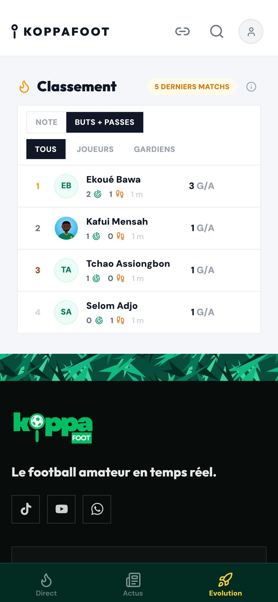
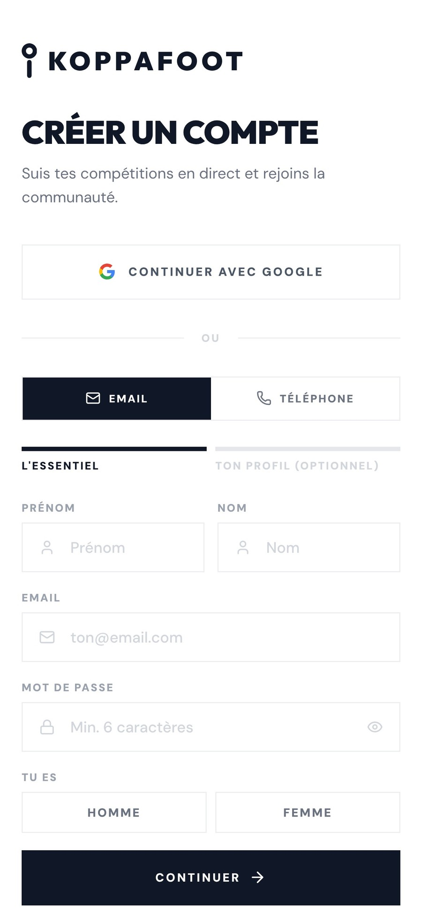
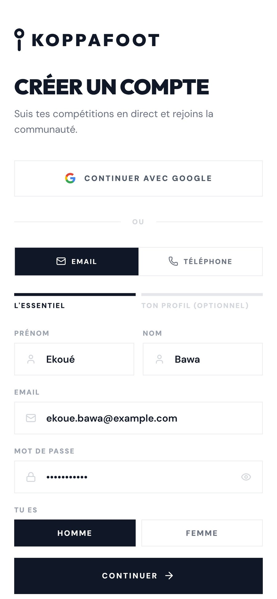
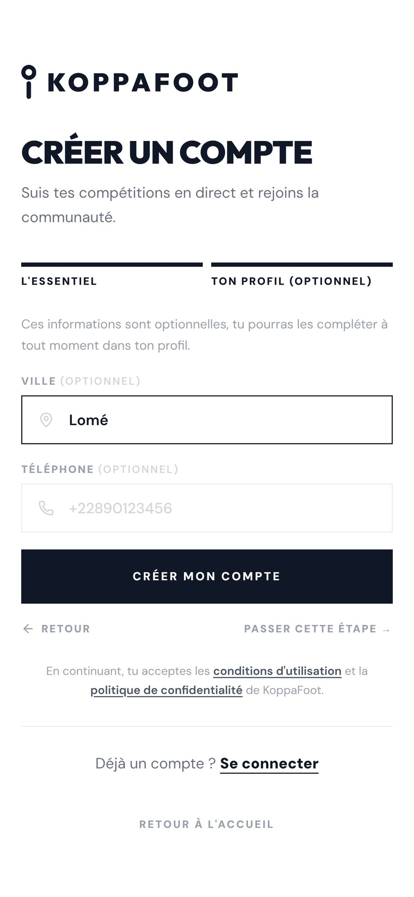
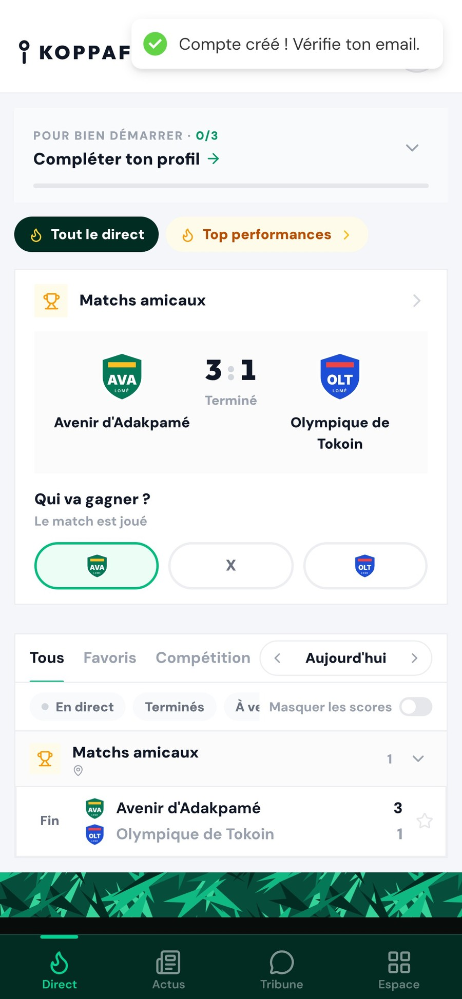
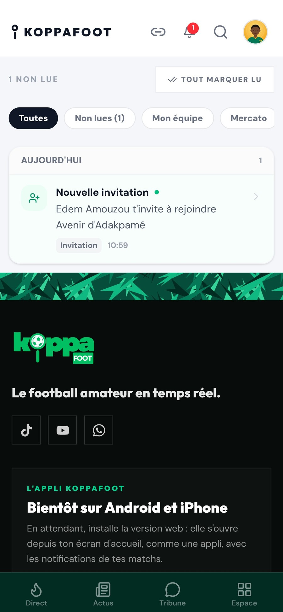
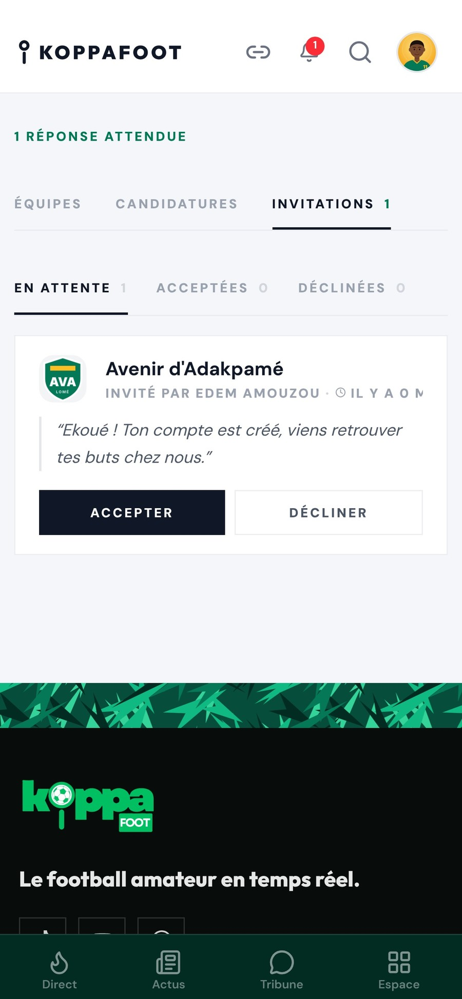
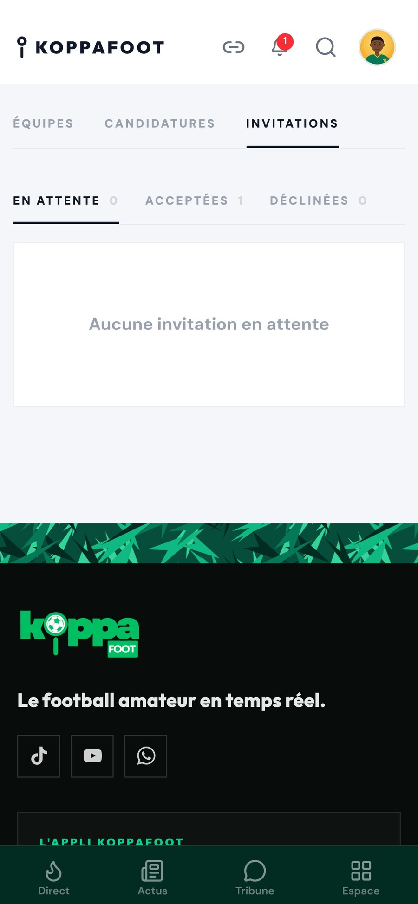
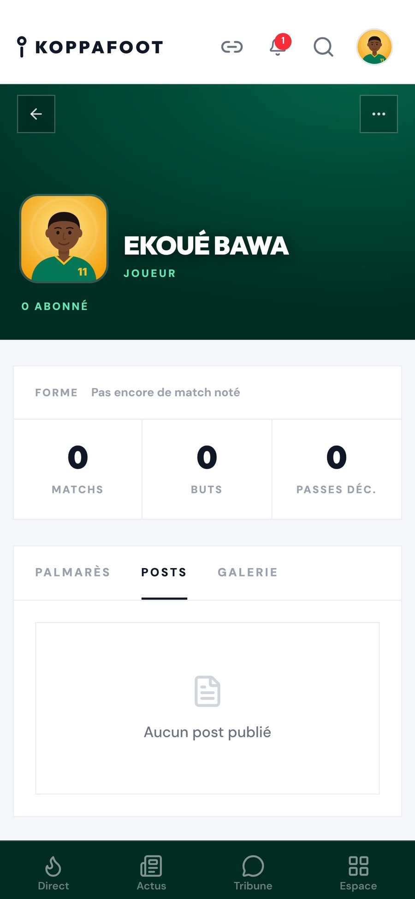
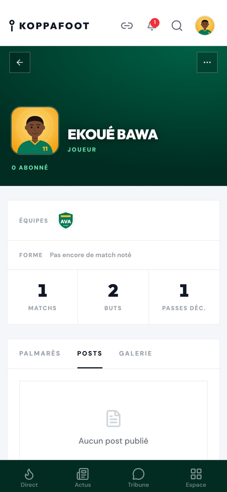
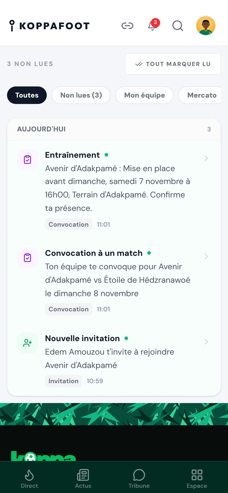
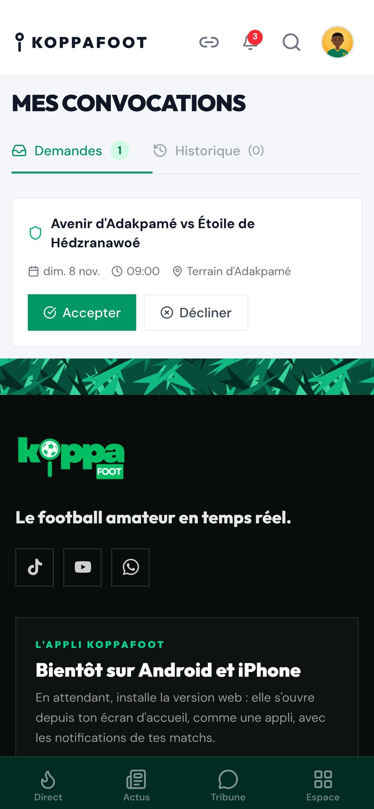
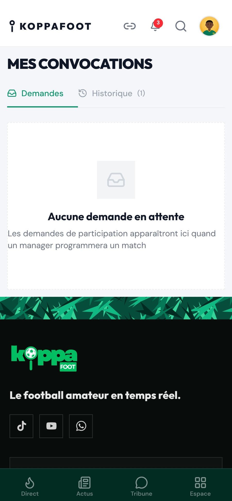
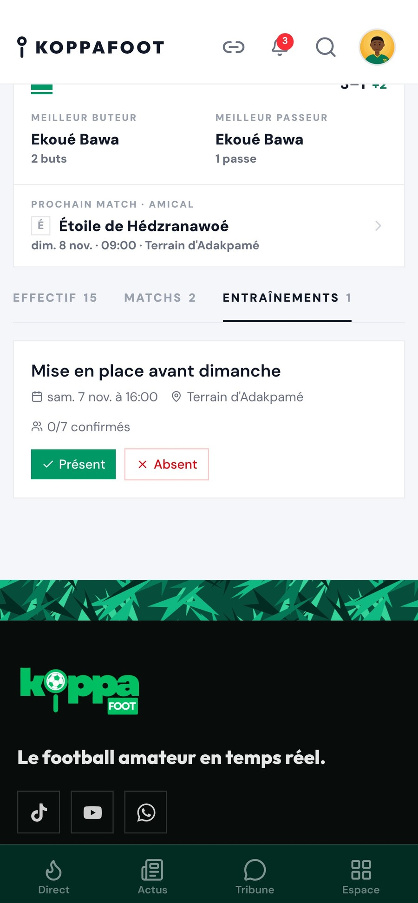
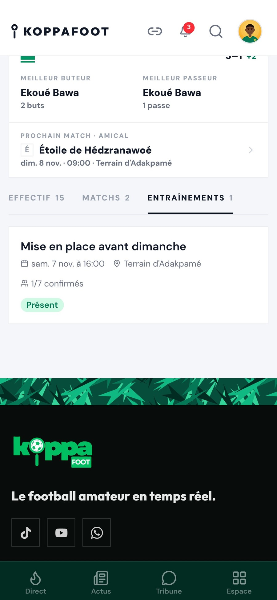
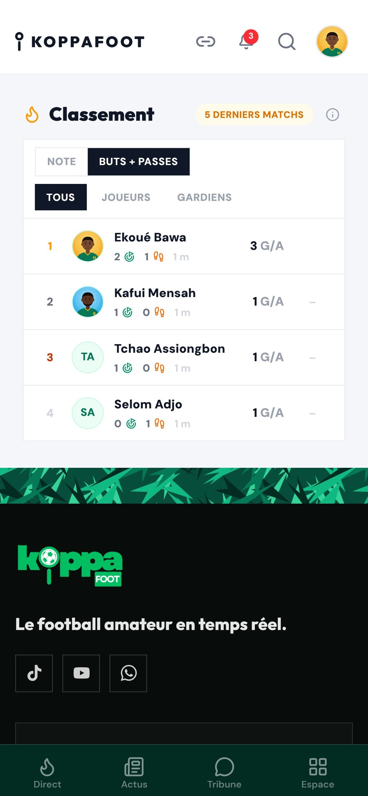
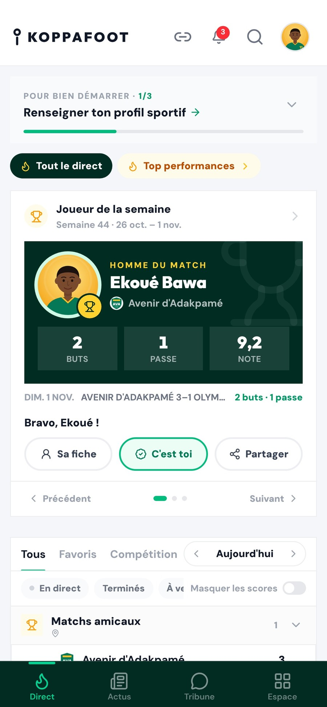
📲 Prête pour ton statut
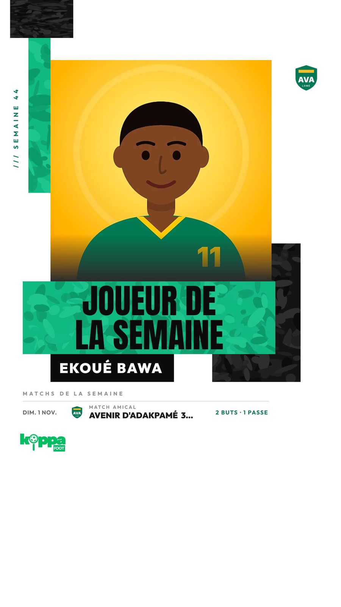
Récupère
tes stats
en 3 étapes
Tu joues déjà.
Tes buts
t'attendent.
Crée ton compte
koppafoot.com
Lien en description